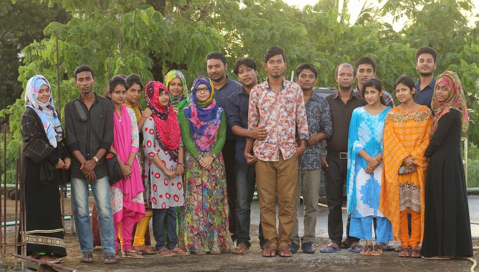

FPABFPAB The Family Planning Association of Bangladesh Bangladesh pioneered the family planning movement in the country. The oldest and largest non-governmental organization (NGO) of its kind, FPAB was established in 1953 under the dynamic LEADERSHIP of Prof. Dr. Humayra Sayed a renowned social workerwith the objective of improving the quality of life of the underprivileged section of the society.
Family Planning Association of bangladesh>
Family PlanningAssociationofBangladesh(FPAB)facebook

এফপিএবি নোয়াখালী শাখা জেলার একটি সনামধন্য চিকিৎসা সেবা প্রদানকারী ক্লিনিক। যা স্বল্পমূল্যে মানসম্মত সেবা নিশ্চিত করে থাকে। এখানে দুই জন এমবিবিএস ডাক্তার সপ্তাহে ৬ দিন (সরকারী ছুটিরদিন এবং শুক্রবার বাদে) চিকিৎসা সেবা দিয়ে থাকেন। সক্ষাতকারের সময়ঃ শনি- বুধবার : সকাল - বিকেল ঘটিকা। বৃহস্পতিবার ঘটিকা। এছাড়া প্রসূতি মায়ের নরমাল ডেলিভারির জন্য ঘন্টা ক্লিনিকে সেবা প্রদান করা হয়।
a href="https://www.google.com/search?q=picture&rlz=1C1KNTJ_enBD1083BD1083&oq=picture&gs_lcrp=EgZjaHJvbWUqDQgAEAAY4wIYsQMYgAQyDQgAEAAY4wIYsQMYgAQyCggBEC4YsQMYgAQyDQgCEAAYgwEYsQMYgAQyCggDEAAYsQMYgAQyDQgEEAAYgwEYsQMYgAQyCggFEAAYsQMYgAQyCggGEAAYsQMYgAQyDQgHEAAYgwEYsQMYgAQyCggIEAAYsQMYgAQyDQgJEAAYgwEYsQMYgATSAQg4NDEyajBqN6gCALACAA&sourceid=chrome&ie=UTF-8#vhid=Hc5jHkS6Vw5sZM&vssid=l">facebook
A social enterprise, we connect and inform 1,024,000+ development, health, humanitarian, and sustainability professionals through news, business intelligence, and funding & career opportunities so you can do more good for more people. We invite you to join us.
 A social enterprise, we connect and inform 1,024,000+ development, health, humanitarian, and sustainability professionals through news, business intelligence, and funding & career opportunities so you can do more good for more people. We invite you to join us.
A social enterprise, we connect and inform 1,024,000+ development, health, humanitarian, and sustainability professionals through news, business intelligence, and funding & career opportunities so you can do more good for more people. We invite you to join us.